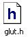
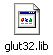

Windows Users
You can download the necessary runtime libraries, link libraries, and header files of GLUT from http://www.opengl.org/resources/libraries/glut/glutdlls37beta.zip. This package comes with three necessary files that just have to be placed in a convenient place where Visual Studio (or whatever compiler you are using) can find them. The following directories are recommended for Visual Studio users but any will work for the header and link libraries as long as they are properly used in the project. The Dynamic Link Library should be placed where Windows can find it. The Windows\System directory is a good place but the same directory as your executable or source code should work just fine. The necessary OpenGL files come installed with Visual Studio. More information about the GLUT API can be found in http://www.opengl.org/resources/libraries/glut/. Some GLUT program sample code can be found in http://www.opengl.org/resources/code/samples/glut_examples/.
C:\Program Files\Microsoft Visual Studio [version]\VC[version]\include\GL
 C:\Program Files\Microsoft Visual Studio [version]\VC[version]\lib
C:\Windows\System32
Students may feel free to do their development in Linux or MacOS. Because GLUT and OpenGL are platform independent, your same code should work in both environments. However, that is not always the case. The most convenient system we have for running and grading assignments uses Windows so please test-compile all projects using Visual Studio on Windows platform.